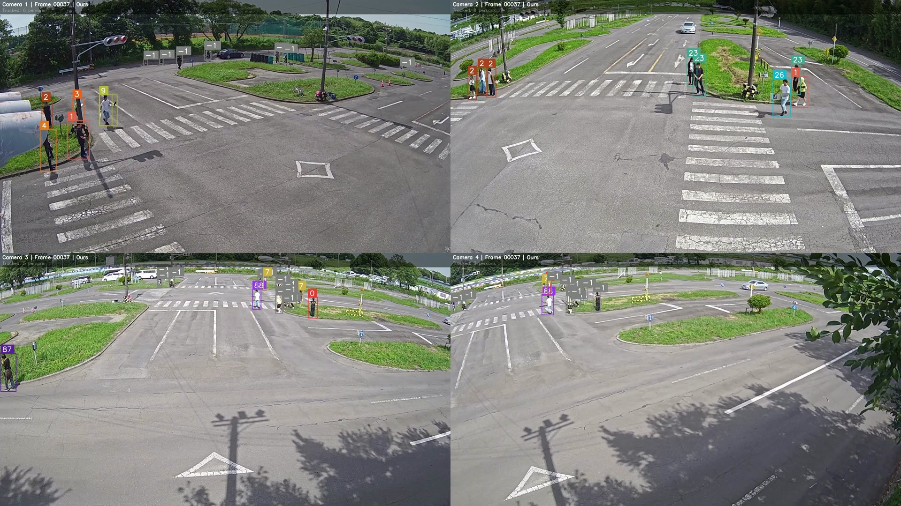
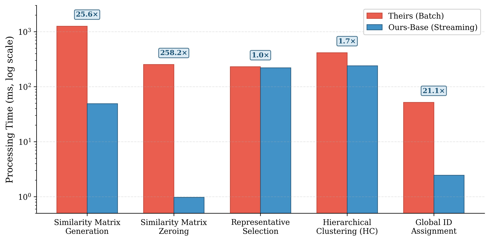
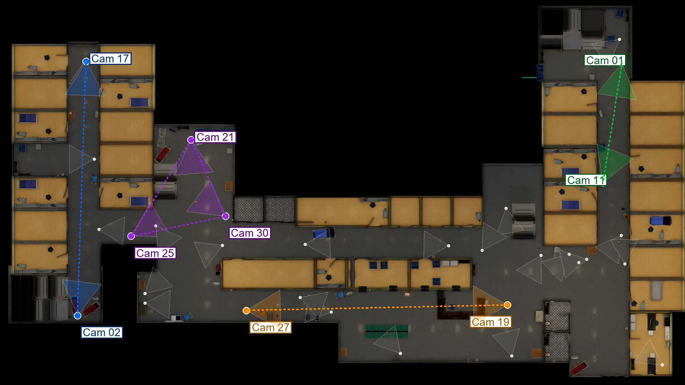

Tracking as a data system.
Multi-camera tracking is usually written as one long pipeline. STREAMTRACK asks a different question: what if detections were streams, identities were tables, and association were a continuous query?

01The problem
Multi-camera tracking is a state-management problem disguised as a computer-vision problem.
A typical MCOT pipeline keeps tracklets in Python objects, recomputes association over a growing archive every window, and treats the camera network as configuration baked in at startup. That works in a notebook. It does not work on an edge gateway with a 256 MB heap, and it makes reconfiguration a restart.
The research question was not “can we cluster appearances better?” The clustering algorithm was already good enough. The question was whether a different execution model could produce the same identities, faster, while making the system's state inspectable and its camera network changeable at runtime.
02The approach
Streams for facts, tables for state
Detections, tracklet updates, and expirations are immutable events on streams. Global identities, camera topology, and runtime parameters are mutable rows in tables. Nothing about a detection is rewritten; identity is a mapping that evolves beside it.
Association as a continuous join
Esper continuous queries consume the streams, read the tables, and emit GlobalPersonEvent
records. Topology groups are compiled into IN (...) predicates at query-plan time, so
pruning candidate camera pairs costs nothing on the per-tuple hot path. Hierarchical clustering runs
only over the surviving candidates.
Same algorithm, different execution model
The batch baseline uses the same JVM, the same libraries, and the same clustering code. Only the orchestration differs: the baseline recomputes state from the archive each window, while the streaming path maintains it incrementally. That isolates the architectural effect and makes the parity claim meaningful: 100% global-ID agreement, not “close enough.”
Reconfiguration as an event
Camera transitions and tracker parameters arrive as MCPTConfig events. The control plane
deploys new queries and preserves identity state, so the camera network can change without stopping
the engine. The measured outage and recovery are part of the evaluation, not an afterthought.
Evaluate at edge scale
The evaluation runs on an Intel Core i7-10610U with 32 GB RAM and the JVM capped at 256 MB — a deliberate stand-in for a resource-constrained edge gateway. Two public datasets cover different camera counts: WTS with 4 cameras and NVIDIA SmartSpaces with 9.
03Architecture
The system has three kinds of state. Streams carry what happened. Tables hold what is true now. Continuous queries are the only place where the two meet.
Esper owns the lightweight relational state. Heavy feature tensors live in JVM memory and are shared zero-copy between operators. A small socket exposes the tables for live inspection, which is how identity changes can be watched while the engine is running — the system's state is SQL, not a debug print.
SELECT.
04Results
Against the functionally equivalent batch baseline, the streaming path delivered a 9.8× end-to-end speedup, with 12.0× in representative selection and 9.5× in hierarchical clustering. Every stage passed parity: the final global-ID mapping was identical.
Topology-aware partitioning reduced mean association latency from 41.96 ms to 10.10 ms at 9 cameras — a 4.16× reduction, or 4.27× after discarding the JIT warm-up window. Runtime reconfiguration completed with a 337 ms outage and 190 ms recovery, with identity state preserved and no engine restart.

The interesting result is not the speedup by itself. It is that the speedup comes from the execution model, not from a cheaper algorithm: the clustering code is the same. As the archive grows, the batch curve grows with it; the streaming curve stays shallow.
05Evaluation
Every headline number is reproducible from the repository. The harness includes the batch baseline, the topology benchmark, the reconfiguration experiment, stage-by-stage parity checkers, and a script that extracts the reported figures from the logs.
- Hardware: Intel Core i7-10610U (4C/8T, 1.80 GHz), 32 GB RAM, JVM heap capped at 256 MB.
- Datasets: Woven VisionAI WTS (4 cameras) for parity and stage speedups; NVIDIA SmartSpaces / AI City 2025 Track 1 (9 cameras) for topology pruning and reconfiguration.
- Baseline: the same JVM, libraries, and clustering code, with batch orchestration that recomputes state per window.
- Parity: stage-by-stage Java-vs-Python dumps and an end-to-end global-ID comparison.

06Publication
STREAMTRACK: A Streams-and-Tables Architecture for Scalable and Reconfigurable Multi-Camera Object Tracking
Mahmoud Tayee, Mohamed ElHelw, Ahmed Awad. Accepted at NILES 2026; IEEE Xplore publication pending. A related journal manuscript is under review at Future Generation Computer Systems.
07Reflection
This project changed how I think about computer vision systems. The model is one component; the hard part is often the state around it — who is who, what changed, and what happens when the camera network changes underneath you.
The next step is distribution: sharding the stream across machines, preserving the same table semantics, and testing whether the architectural advantage survives network partitions. The second is learned association: replacing fixed similarity thresholds with a model that can explain its merges.